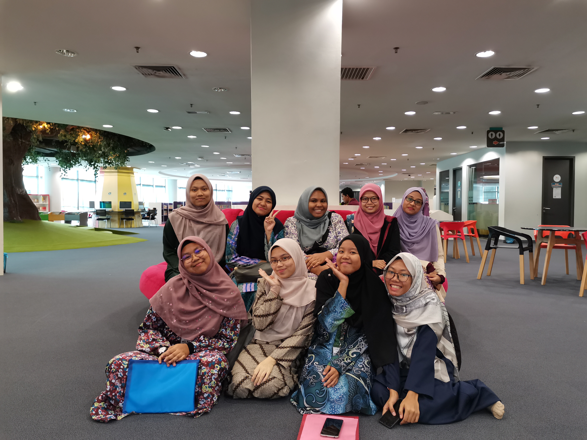
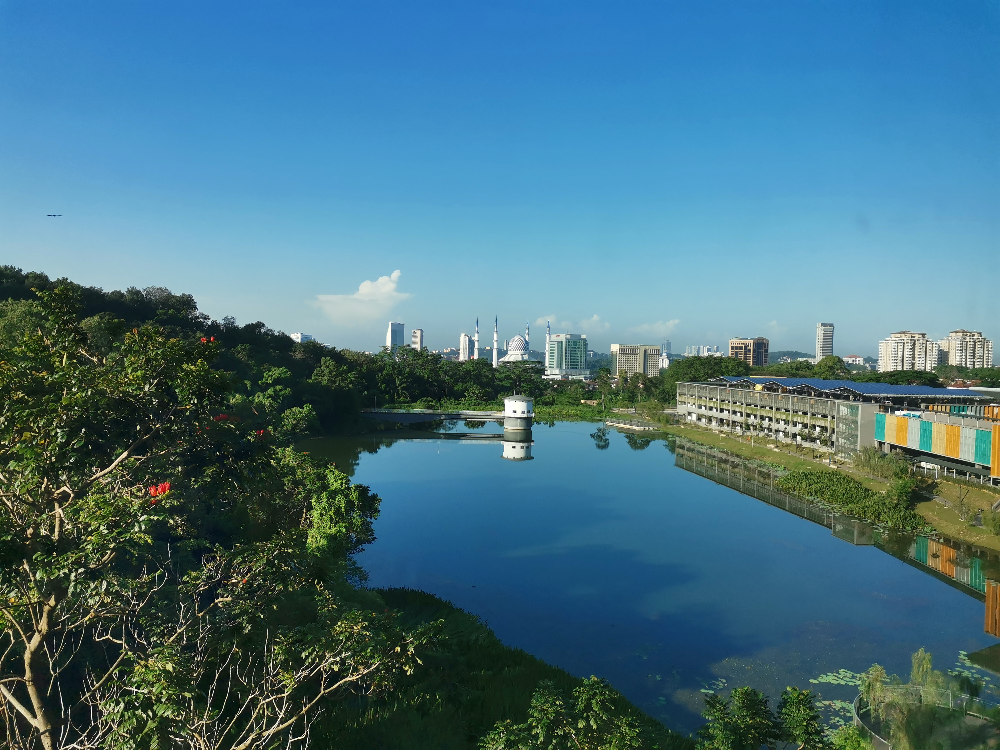

My Experience
20 years of life is not a long journey, yet it brings me tons of experiences since me in the younger ages until today. yes, I have a lot of stories to share but in the meantime, I will highlight my experience while I am in my internship period for the first time. My internship started early this year, 2020 for only a month and half. This internship has to be done as it was one of the requirements of my diploma. PPAS was where I am undergoing my internship. The picture below was taken on the last day of internship where me and my course mate suddenly bumped into our Director of PPAS, Puan Mastura Binti Haji Muhamad. She asked us whether we feel welcomed to the organization and checking us out. She is very nice.

At there, I have been learned so much things regarding the library itself and its management. There are eight main departments that running to make sure the users could get the best services but, I only fortunate to entered six from it. The Human Resource department has planned out my own schedule pertaining which department I will enter every week which made my internship journey smooth.This is the schedule for me given by the HR department:
- Week 1 - Collection Development department
- Week 2 - Documentation department
- Week 3 - Corporate department
- Week 4 - Planning and Development department
- Week 5 - Customer Service department
- Week 6 - Reference and Research department

In the meantime, there are few other students from other universities such as Universiti Teknologi MARA Puncak Perdana and Jasin, Universiti Pertahanan Nasional Malaysia and Universiti Islam Antarabangsa Malaysia who also undergoing their internship for under various programs. I have made friends with them. Because of them, I can finish up my internship period with a lot of laughs and joys. Those memories are precious because they were the first time, I am having contacts with people for the purpose of working.

Other reason why I like it there because the scenery that I can get to see every morning while doing my shelving duty. It was such a beautiful piece from the nature eventhough it is human made. Actually, there is more that I want to talk about but, overall, I love all oh my experiences undergoing my internship in PPAS and I would love to visit there again if I have time.